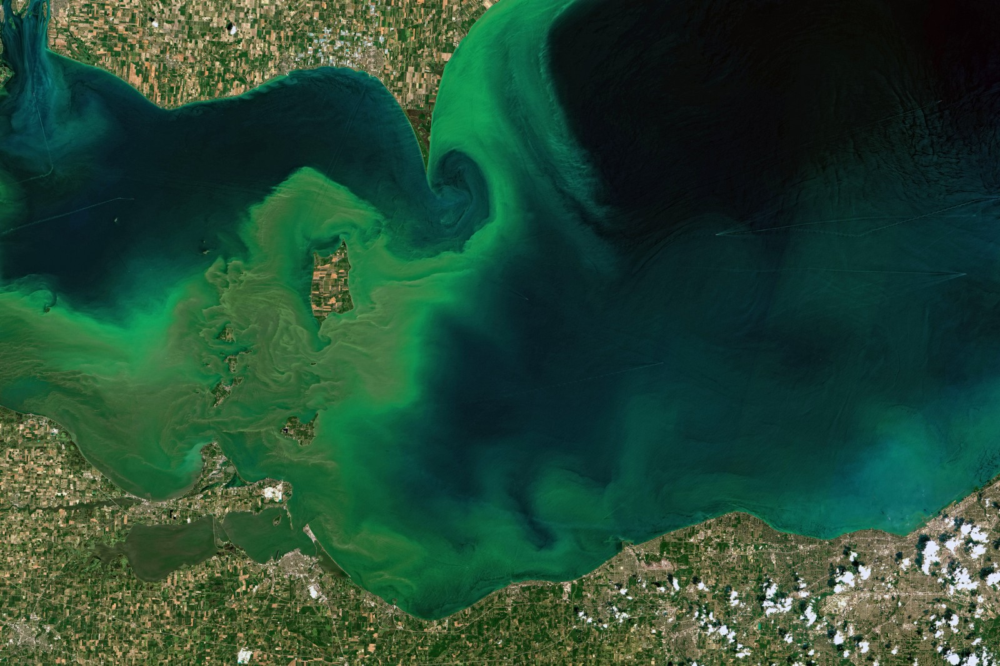
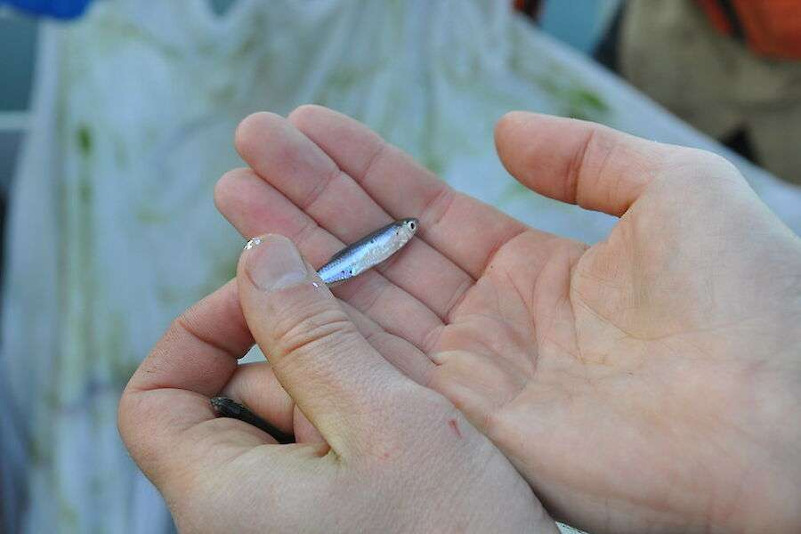
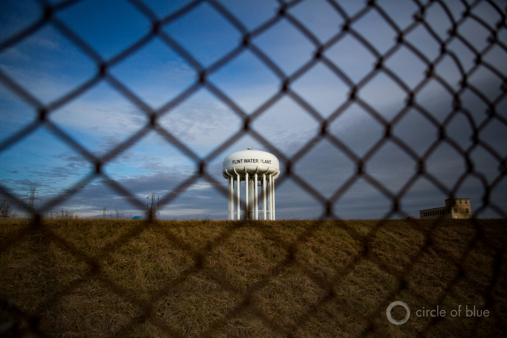
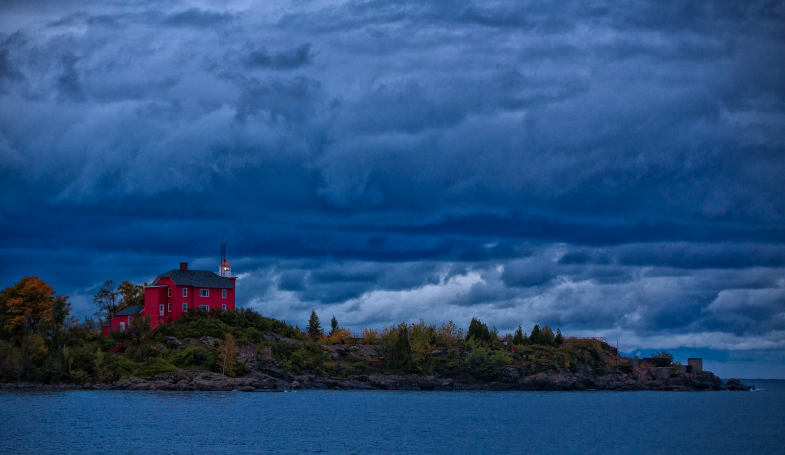
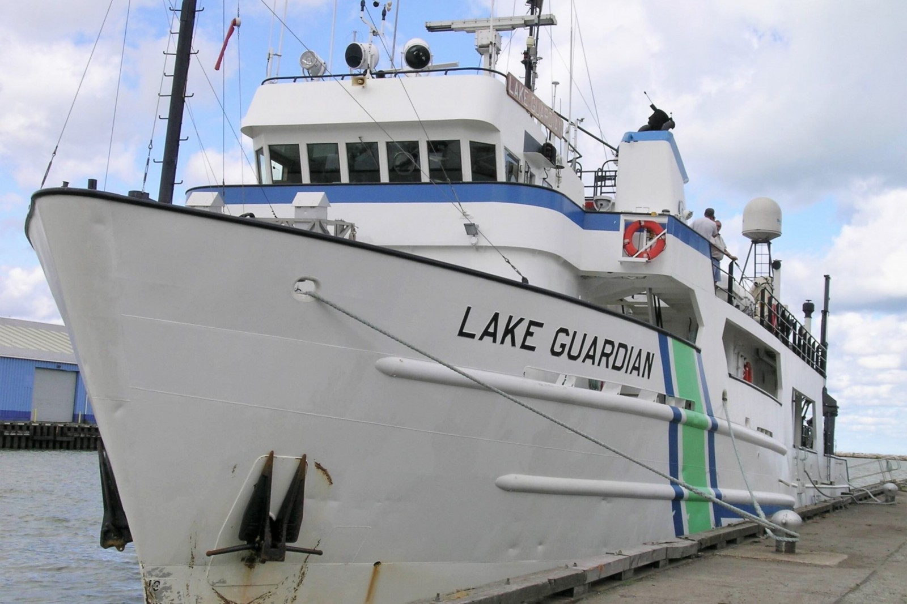
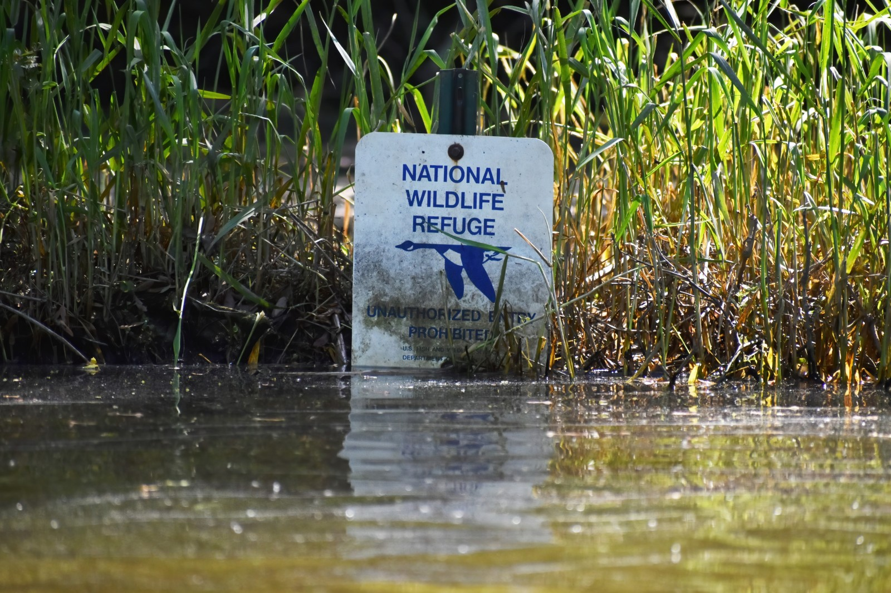
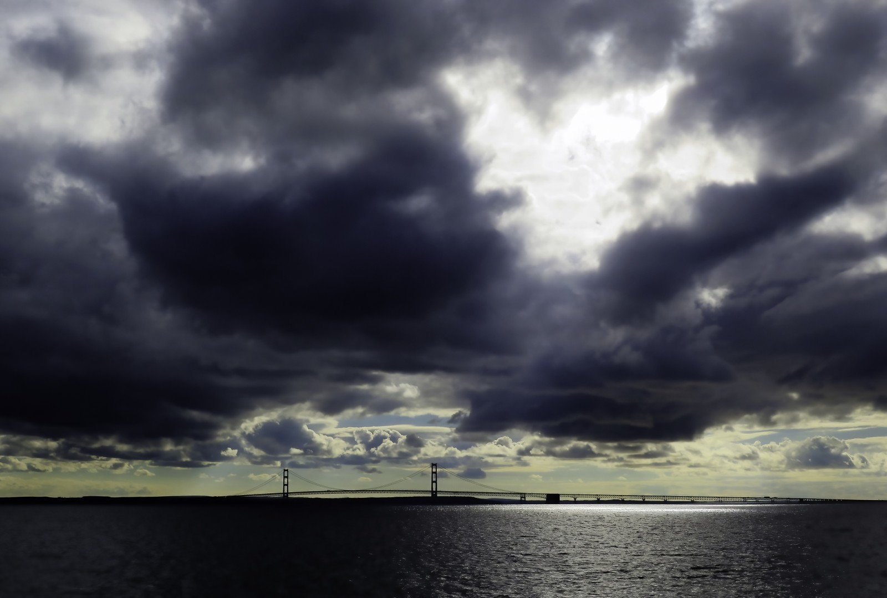
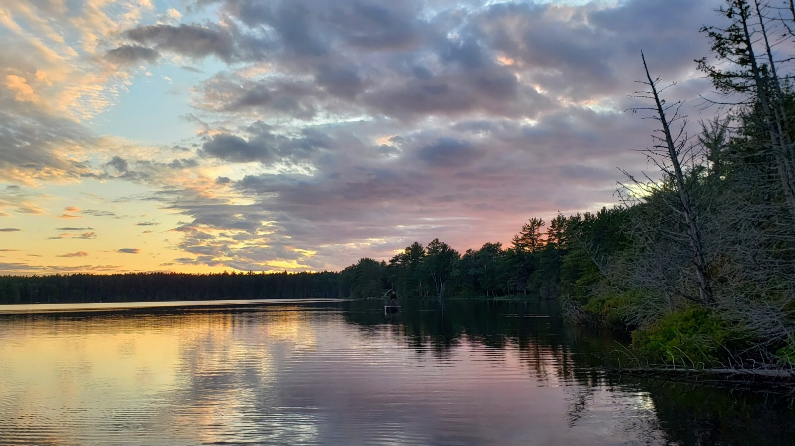

C+: Western Lake Erie receives mediocre score on new report card

This article appears as part of the
Great Lakes News Collaborative.
A collaboration between Bridge Michigan; Circle of Blue; Great Lakes Now at Detroit Public Television; and Michigan Radio, Michigan’s NPR News Leader; who work together to bring audiences news and information about the impact of climate change, pollution, and aging infrastructure on the Great Lakes and drinking water.This independent journalism is supported by the Charles Stewart Mott Foundation.
Lake Erie’s Western Basin didn’t do well on its first big test: a report card produced by the University of Maryland Center for Environmental Science.
The report card gave it a mediocre score, an overall C+, based on a various factors regarding the lake’s condition.The watershed surrounding western Lake Erie scored a C.
The report card was produced by compiling and deciphering a wide range of scientific data that had already been collected for 2018.
'We’re really excited to share these results, almost two years of hard work by an amazing team of scientists and resource managers,' said Bill Dennison, professor of marine science and vice president for science application at UMCES.'We’ve been doing the Chesapeake Bay for 14 years now.'
Dennison said parameters of the data collection changed once the project began in September 2018.
'When we started this journey we really just focused on the Maumee watershed, and of course we quickly realized that we needed to go upstream to include inputs from the Detroit River and Lake St.Clair, which includes watersheds in Michigan and Ontario,' Dennison explained.'So the watershed map is much bigger than Ohio.It also includes parts of Indiana.'
Dennison said clean water flowing south from Lake Huron and other Canadian and Michigan tributaries is actually helping improve water quality.
'It’s actually diluting out and improving water quality in the Western Basin where the Maumee and Sandusky Rivers are coming in,' he said.'The cleanest water in 2018 was the northwest.'
The simpler question might be ‘What doesn’t it cover?’
Broken into two grades, one for the watershed and another for the lake, the report cards offer a plethora of data that is easy to understand.For the project, scientists culled information from a variety of sources to produce facts about various types of fish and macroinvertebrates, algal blooms, toxins, nitrates, nitrites, phosphorous, nitrogen and chlorophyll, among others.While this information was gleaned from thousands of pages of charts, graphs, tables and other often dense scientific data, it was streamlined and assigned one of four color codes for easy accessibility by the non-scientist public.
)
'Not everyone’s going to take the time to stare at charts and try to figure out exactly what’s going on in that chart,' said Tom Bridgeman, director of the Lake Erie Center at University of Toledo.'Whereas a graphic that shows red, orange, yellow and green – people are busy.For many this may be all they have time for.It’s another way of getting information out there.This is a great start for people who just want an understandable overview of what’s going on with Lake Erie.'
The report card includes dozens of pages which explain each of the indicators and how scientists assessed and scored them.There are more than 235 clickable items on the report card that enable readers to zero in on a specific portion of western Lake Erie or its more than a dozen contributing watersheds.
In about one minute, a person can easily learn, for example, that walleye are doing well in all of the Western Basin, and the same for – they’re both green.But click on emerald shiners, a favored fish of both walleye and yellow perch, and you’re met with a sea – or a lake – of red.Not good for emerald shiners or other fish.Click further and learn about the emerald shiner and how it was scored for the report card.
The same ease of use is applied to all the other categories and each watershed or lake section in the study, for each of the indicators.
While UMCES produced the first report card, the next one is expected to be a University of Toledo product, following the example set by its east coast counterpart.UMCES will still contribute to the creation of the second report card to ensure a smooth transition between schools.
'Maryland’s certainly the pre-eminent group in country in developing these report cards and they’ve done not just the Chesapeake Bay, but they’ve done them across the country and the world,' Bridgeman said.'That’s why they were selected to do this report card.The next report card I would say it probably will be at least a year before it comes out.'
According to Bridgeman, who served as an advisor on the first report card, he’s been tasked with finding the right professors at University of Toledo to work on the next one.
'There will be a need for report cards for years to come,' he said.'It offers a way to compare years and gauge progress.In order to measure improvements, it’s really important to keep the report card going.'
Dennison said the development and use of this report card style has significantly benefitted the Chesapeake Bay.
'What’s really gratifying about the report cards is that we’ve turned the corner.The one in Chesapeake Bay has garnered national news.It helped us draw attention, that up until 2010, voluntary staff were not able to,' he said.'This 2018 Lake Erie report card, it’s intended to be released every two years.It’s important to know where we are, but it’s equally important to know if we’re doing the right things.'
Dave Spangler is a long-time Lake Erie charter captain and also a board member for the Lake Erie Foundation, a non-profit that advocates for improving water quality for residents and industry alike.He said Cs are disappointing.
'It turned out to be a C and of course that really hurts,' he said.'If we ever want to get from a C to a B, we’ve got to get this thing under control with the algae.'
According to Spangler, Western Basin municipalities and other groups, such as Lake Erie Waterkeeper, sought out UMCES to create the first report card in an ongoing effort to improve the lake.
'It’s way more than just the water itself,' he said.'The economic situation is a big part of it because tourism and fishing is a biggie, huge dollars, and that’s affected when the water quality goes down.And with industry, too, companies don’t want to locate new facilities in a region with poor water quality, so it’s way more than looking at just fish and algae.'
U.S. Michigan Rep.Debbie Dingell said she appreciates the comprehensive nature of the report card.
'I want to thank UMCES for bringing everyone together to announce this first effort to combine environmental data to show not only the health status of Lake Erie but also the watershed in one integrated report,' she said.'As a lawmaker it’s critical we have information and science to help us identify the challenges of our time so we can tackle them together.Having critical information such as this report card improves our ability to make and advance policies in our region.'
Posted On: 2020-10-13T00:00:00
Posted By: James Proffitt







Content Date: 2020-10-13
Download Date: 2021-05-12
Document ID: L0C04B5BM